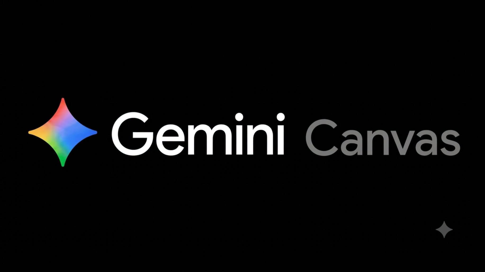

Facebook｜Gemini Canvas 7 個實用場景：從文件編輯、Web App 到學習材料

為什麼保存
這則 Facebook 貼文把 Gemini Canvas 從「Gemini 裡面容易被滑過的功能」重新定位成工作流入口：不是只問答，而是在同一個畫布裡編輯文件、建立 Web App、生成學習材料，甚至把來源資料轉成互動內容。
對 AI 學習雷達來說，它值得保存的原因是：Canvas 正在把聊天介面變成「可產出、可修改、可分享」的工作區。這和 Claude Artifacts、ChatGPT Canvas 類工具同屬一個方向：使用者不只拿到文字答案，而是拿到一份能繼續編輯、預覽、發布或轉成教材/工具的半成品。
Facebook 貼文可見內容
作者 Chris KE 寫道：
> Gemini has a feature called "Canvas." 99% of users scroll past it. It's one of those features that completely changes how you use Gemini. Here are 7 practical use cases:
目前未登入狀態可見互動數約為 260 個心情、20 則留言、62 次分享；貼文圖卡是黑底「Gemini Canvas」封面。留言區可見作者列出的前 5 個用例，但每則留言的詳細說明被「查看更多」截斷，無法完整展開。
可見用例如下：
| 可見序號 | 貼文用例 | 可靠解讀 |
|---|---|---|
| How to access | How to access Gemini Canvas：Open Gemini... | 入口說明被截斷；可確定作者在補充如何開啟 Canvas。 |
| 1 | Interactive Document Editing | Canvas 以分割畫面取代標準聊天，讓使用者直接編輯 AI 生成內容。 |
| 2 | Build Web Apps Without Coding | 透過 prompt 讓 Canvas 生成可運作的單頁 Web App。 |
| 3 | Create Study Materials | Create menu 可把報告轉成學習材料；細項被截斷。 |
| 4 | Use NotebookLM as a Source | 透過來源選擇器連接 NotebookLM notebook；細節需以實際介面為準。 |
| 5 | Generate Apps from Screen Recordings | 上傳螢幕錄影並口述 App 運作方式，讓 Canvas 生成應用原型；細節被截斷。 |
| 6–7 | 原貼文宣稱有 7 個 practical use cases | 未登入狀態未能可靠擷取第 6/7 點；本文不補腦。 |
官方查核：Google 對 Canvas 的定位
Google 官方 Gemini Canvas 頁面說明，Canvas 可將想法轉成應用程式、遊戲、資訊圖表等內容；Google 也把它定位成能在同一處與 AI 協力撰文、程式設計及創作的工作區。
官方頁面列出的能力包括：
- 將 Deep Research 報告變成應用程式、遊戲、互動式測驗、網頁和資訊圖表。
- 只要描述想法，Canvas 就能生成程式碼，打造可分享和運作的應用程式或遊戲。
- 協助撰寫草稿、調整語氣、修飾段落並提供回饋。
- 上傳學習指南和來源資料後，Gemini 可量身打造測驗，增加學習互動。
- 以動畫或互動方式解釋程式碼與抽象概念。
- 工作場景中可建立資訊主頁、進度追蹤工具、客戶管理系統與銷售流程工具等。
因此，Facebook 貼文中「文件編輯、Web App、學習材料」等用例大方向與 Google 官方定位一致。不過，「NotebookLM 作為來源」與「螢幕錄影生成 App」在本次可見資料中只來自 Facebook 貼文留言摘要；是否對所有帳號開放、介面名稱與入口位置，仍應以當前 Gemini 介面與 Google 官方說明為準。
可以怎麼用在課程與工作流
對欒帥的 AI 課程與知識庫工作流，可以把 Gemini Canvas 當成三類任務的原型器：
- 教材互動化：把講義、報告或 Deep Research 結果轉成互動測驗、概念圖或小型網頁。
- 快速 Demo：用自然語言生成單頁 Web App，例如報名流程模擬、學習雷達篩選器、課堂互動工具。
- 文件打磨：在同一個 Canvas 中反覆修改文章、企劃、講稿，而不是把版本散落在多輪聊天裡。
比較穩的 prompt 寫法不是「做一個 App」，而是先定義輸入、輸出、受眾與互動規則：
```text
請用 Gemini Canvas 幫我做一個 16:9 課堂互動頁面。
主題：AI 工具選型
對象：大學生 / 教師
功能：
- 顯示 5 類工具卡片
- 點選卡片後展開使用情境、風險與推薦練習
- 最後加入 5 題自我檢核小測驗
限制：
- 所有文字使用繁體中文
- 單頁即可，不需要後端
- 視覺風格乾淨、專業、高質感
- 生成後請先列出頁面架構，再產生可預覽版本
```
風險與限制
- Facebook 原貼文有登入牆與「查看更多」截斷；本文保存的是可見內容，不宣稱完整還原 7 點。
- 「99% users scroll past it」是社群行銷式 framing，不能當成統計事實。
- Canvas 生成 Web App 或互動內容仍可能有程式錯誤、UI 無障礙問題、資料幻覺與版權風險。
- NotebookLM/來源連接、螢幕錄影輸入等能力可能受帳號、地區、方案與功能 rollout 影響。
- 生成的學習材料與測驗題需人工審稿，尤其是課程評量、專業知識或公開教材。
來源
- Facebook 分享連結：`https://www.facebook.com/share/1BbpVS5iDY/?mibextid=wwXIfr`
- Facebook canonical：`https://www.facebook.com/photo.php?fbid=1561041048829802&set=a.109837510616837&type=3`
- Google Gemini Canvas 官方頁：`https://gemini.google/overview/canvas/`